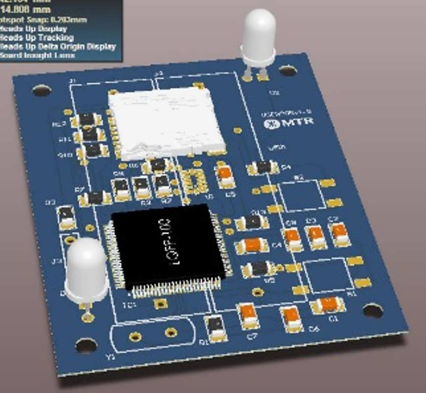
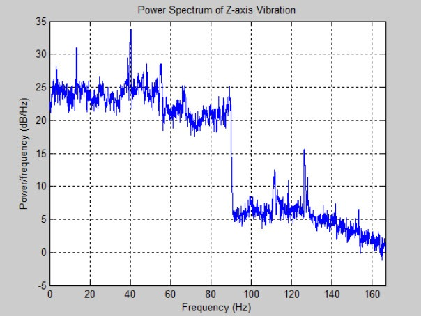

Traditional method
Compact sensor
Perform Station to station analysis
1. Adjust the sensor sampling frequency in the microSD card
2. Install the sensor using adhesive Loctite 495
3. Press the button to remove gravity offset
4. All the data gets recorded to the microSD card in an Excel file
analyze your data using our free software
Detect train station stops automatically
Plot graphs on 3 axis and compare with vibration limits / standards (top left hand table)
If you installed the sensor inside the passenger compartment, the ride comfort index is automatically calculated in accordance to ISO2631
Find the root cause of your vibration using frequency analysis. Is it caused by an equipment or track wear out?
Reports are generated automatically with one click
You can generated reports on multiple sensors too!